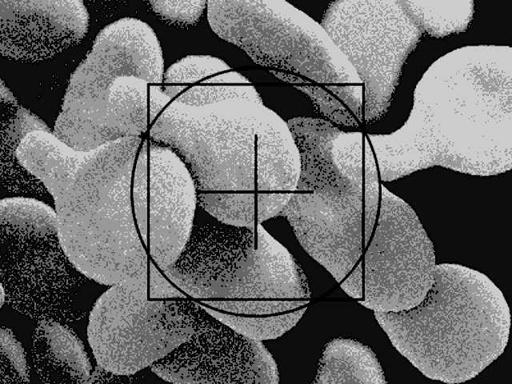

Mission
My research connects Machine Learning and Possibility Theory to develop principled approaches to uncertainty in artificial intelligence.
I work on formal reasoning methods and learning under uncertainty, with particular attention to the representation and management of incomplete information and the computational costs of AI models.
Research interests
Research areas [ -> ]
Research
Research
Epistemic Logic
Research
Academic profile
I am interested in formal reasoning methods, epistemic logic, theories of uncertainty, possibility theory, and the theory of computation.
Academic background
Before beginning my doctoral research, I completed an MSc in Logic at the University of Amsterdam and a BA in Philosophy at the University of Padua.
Supervised by Henri Prade, Florence Dupin de Saint-Cyr, and Ismaïl Baaj.
Academic profile
View Archive [ -> ]
Meet the people behind
the Giuseppe Manes

Henri Prade
PhD supervisor
Possibility Theory, uncertainty, artificial intelligence
Florence Dupin de Saint-Cyr
PhD supervisor
Formal reasoning, epistemic logic
Ismaïl Baaj
PhD supervisor
Machine Learning, uncertainty modelling
Giuseppe Manes
PhD student in Computer Science
Machine Learning, Possibility Theory, formal reasoning
ADRIA
Research team
Argumentation, Decision, Reasoning, Uncertainty and Learning
Education
Academic training
MSc Logic — University of Amsterdam; BA Philosophy — University of Padua; studies at LMU Munich
Research affiliation
Giuseppe Manes is affiliated with:
In collaboration with:
F.A.Q.
What is my research about?
My research studies the connections between Machine Learning and Possibility Theory, aiming to improve how AI systems represent and reason with uncertainty.
Which research areas interest me?
My broader interests include formal reasoning methods, epistemic logic, theories of uncertainty, and theory of computation.
How should I cite something from this site?
My doctoral research is supervised by Henri Prade, Florence Dupin de Saint-Cyr, and Ismaïl Baaj.
When in doubt, cite the page title, Giuseppe Manes, the year, and the URL.
How do I collaborate or request access to restricted materials?
I am based at IRIT, Université de Toulouse, ADRIA team, 118 route de Narbonne, 31062 Toulouse, France.